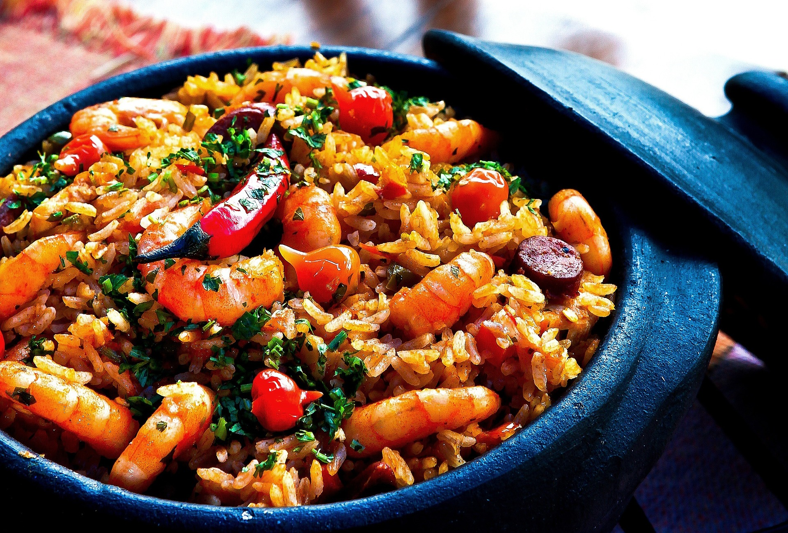

I've had a love affair with food since I was very young and I developed my love for cooking since I made my first pancake. I was 19, and living away from home for the first time. I called my Mom who gave me her very simple pancake recipe. I made it and because it turned out so good, I became interested in learning what else I could make.
My fascination with cooking came to a somewhat abrupt stand-still, first with school and then with work. I just couldn't find the time to indulge in this anymore. It would be some years before I found time again for it and I'm happy to say, I love it just as much.
In this musing, I'll share with you some of my favorite foods and I hope you'll enjoy them as much as I do or at the very least, I hope it will compel you to try something on your own. I'll talk more about cooking in another post so be sure to tune in.
Starter
Here are some of my favorite starters:
- Caesar Salad - Salad dressed with cheese, anchovies and egg.
- Asian Spring Rolls - Who doesn't love spring rolls? Fillings range from shrimp, meat to vegetarian.
- Finger Food Assortments - Olives, cheese, cold cuts, crackers with spreads - it's all good.

Cheese/cold cut platters are super easy to make. It's a great choice when you don't have too much time. Just head to a supermarket and grab some cheese, crackers, olives, deli meats, fruits and there you have it - a platter with something for everyone.
Entree
I have a hard time choosing from all the foods I love simply because I love most everything. I'll try and narrow it down, though its difficult.
- Tom Yum Goong - A sour spicy soup dish from Thailand.
- Paella - A rice dish originating from Spain.
- Chicken Shawarma - A popular and flavorful Middle Eastern dish made with chicken, lamb or a mixture of meats.
- Chicken Tikka Masala - Mild, creamy totmato-based dish from India. Best eaten with rice or Indian Naan bread.

Like I said, there are too many delicious foods out there that if you had to name your top 5, I'll bet you'd have a hard time too. I intend to delve further into this in future musings.
Sides
I love how today we have so many fusion types of food and the easiest to make are sides. They usually don't use too many ingredients and just by adding a spice here and there, a new dish is created.
- Roasted Vegetables - Any roasted vegetables will do. Olive oil, garlic, salt and pepper and what's not to like?
- Naan - A leavened bread from India. If I could choose just one bread, this is the one I'd pick.
- Coleslaw - A usual favorite.
I'll talk more about the different types of breads in another chapter. I know they are not supposed to be good for us, but I could eat bread with just butter all day long.
Desserts
As I always say, I could start and end a meal with just desserts, that's how much of a sweet tooth I have. Over the years, I've learned to make more desserts than I have other meals.
- Cakes and Pies - No explanation required.
- Thai Mango Sticky Rice - If you haven't tried it, try it soon. It's out of this world. Its a concoction of steamed glutinous rice with fresh mangoes with a sweet coconut topping.
- Macarons - A meringue-type dessert. So light it melts in your mouth. Its also colorful to boot.
I'm sharing my Mom's pancake recipe here with you. This is the one that got me hooked on cooking. Hope you enjoy it.
Light and fluffy pancake
Makes 4
Ingredients:
- 1 cup all purpose flour
- 1/2 teaspoon baking powder
- 1/4 teaspoon salt
- 1 egg, separated
- 1 tablespoon sugar
- 2 tablespoons melted butter
- 1 teaspoon vanilla essence
- 1 cup buttermilk
Method:
- Mix the first 3 dry ingredients in a bowl. Set aside.
- Mix the egg yolk, melted butter, vanilla and buttermilk in another bowl.
- In another bowl, beat the egg white till foamy. Add in the tablespoon of sugar and continue beating till hard peaks form.
- Pour the egg yolk mixture into the dry mix. Mix only until it comes together. There will be lumps and that's ok. Lightly fold in the egg white mixture. Do not overmix.
- Heat a non stick pan or griddle.
- When pan/griddle is hot, add about a ladleful of batter to the hot pan. When tiny bubbles appear on the batter, its time to turn the pancake. It should cook around 2 minutes on each side, depending on how hot your pan is.
- Serve with syrup.
Well its been fun sharing my love of food. Be sure to catch me next time on Musings of a Foodie. Till then, ciao.